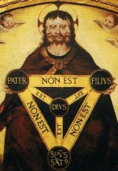

¿Se debe enseñar religión en los colegios y escuelas?
Aunque al usar la palabra religión todo el mundo sabe de qué hablamos, juzgo conveniente partir de una definición que oriente las razones que se expongan a favor o en contra de su enseñanza en las instituciones de educación primaria y secundaria.
Acojo la que propone Nicola Abbagnano en su Diccionario de Filosofía: “La creencia en una garantía sobrenatural ofrecida al hombre para su propia salvación y las prácticas dirigidas a obtener o conservar esta garantía. La garantía a que apela la religión es sobrenatural, en el sentido de que va más allá de los límites a que pueden llegar los poderes reconocidos como propios del hombre…”.
En síntesis es la creencia en un ser supremo, creador del universo, ordenador de la marcha del mismo, garante de una vida ultraterrena eterna y feliz para quienes observan sus mandatos e infeliz para quienes los desconocen.
Hay una gran variedad de religiones, posiblemente algunas no suficientemente descritas en la definición citada, pero como allí si quedan comprendidas las que nos son más familiares, partimos de ella para responder a la pregunta que se nos ha formulado.
Lo primero que debe anotarse es que la creencia no es objeto de demostración ni de verificación sino de aceptación por un acto de fe, que nada tiene que ver con la razón ni con la experiencia que son las fuentes del conocimiento intersubjetivo, es decir, el que puede compartirse con los demás, pues está sujeto a demostración o a refutación. Un buen ejemplo de creencia es el dogma de la Santísima Trinidad, según el cual en Dios hay tres personas distintas, el Padre, el Hijo y el Espíritu Santo, que constituyen una sola sustancia divina. No es fácil que la razón lo comprenda, ni la experiencia pueda ratificarlo, pero si usted es cristiano no puede remitirlo a dudas. O lo acepta, y está en la verdad, o no lo acepta y está en el error. Hoy, por ventura, no condenan a morir en la hoguera a quienes no lo aceptan, pero en el pasado muchos ardieron. Por ejemplo, el médico y erudito español Miguel Servet, quemado vivo en Ginebra en 1553 por mandato de Juan Calvino, uno de los líderes de la Reforma Protestante que sin embargo predicaba la libertad de conciencia… Igual suerte corrió unos años después Giordano Bruno, astrónomo y filósofo italiano condenado por la Inquisición católica a igual tormento, por sostener tesis, relativas a la astronomía, que la Iglesia consideraba heréticas.
Obligar a alguien a que acepte como verdades, cosas que su conciencia rechaza o que están contradichas por la razón y la experiencia, es un auténtico crimen contra la naturaleza racional de los humanos.
Ahora bien: como la religión es un hecho social innegable, debe ser identificado, estudiado y evaluado con honestidad y ecuanimidad. Es, a mi juicio, un error ignorarlo o soslayarlo. Por eso, en los planes de estudio de primaria y secundaria debe contemplarse un espacio para reflexionar sobre este fenómeno y señalar los efectos que produce, con absoluto rigor y honestidad. Pero adoctrinar al niño y al adolescente en cualquier tipo de creencias religiosas y obligarlo a aceptar dogmas que la razón y el sentido común rechazan, es sofocar su conciencia y debilitarlo como ser pensante.
Sería deseable que los maestros hicieran accesible para los estudiantes un texto tan bello y tan esclarecedor sobre el asunto, como El porvenir de una ilusión de Sigmund Freud. Cito, de él, un breve pasaje: “De los hombres cultos y de los trabajadores intelectuales no tiene mucho que temer la civilización. La sustitución de los motivos religiosos de una conducta civilizada por otros motivos puramente terrenos se desarrollaría en ellos calladamente. Tales individuos son, además de por sí, los más firmes sustratos de la civilización. Otra cosa es la gran masa inculta y explotada, que tiene toda clase de motivos para ser hostil a la civilización… Si no se debe matar única y exclusivamente porque lo ha prohibido Dios, y luego resulta que no existe tal Dios y no es de temer, por tanto, su castigo, se asesinará sin el menor escrúpulo, y solo la coerción social podrá evitarlo. Se plantea, pues, el siguiente dilema: o mantener a estas masas peligrosas en una absoluta ignorancia, evitando cuidadosamente toda ocasión de un despertar espiritual, o llevar a cabo una revisión fundamental de las relaciones entre la civilización y la religión”.
Al indoctrinamiento en cualquier sistema religioso, dogmático, hay que contraponer entonces, la reflexión antropológica, sociológica e histórica del fenómeno, para ilustrar y no pervertir la mente del educando.
- *
-
Exmagistrado de la Corte Constitucional de Colombia y excandidato presidencial.
Volver al índice de artículos
Comentarios
Comments powered by Disqus